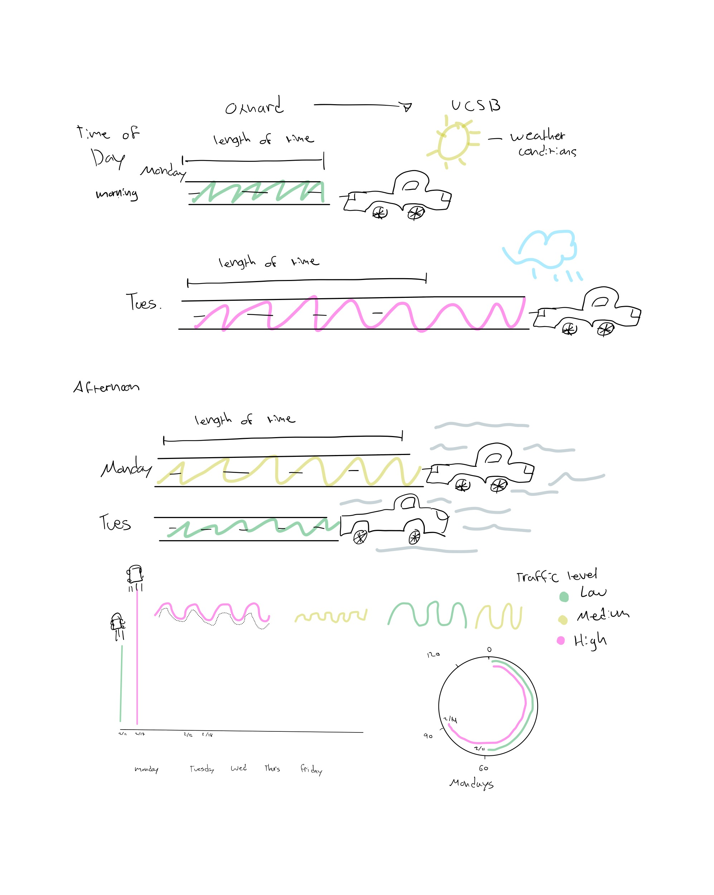
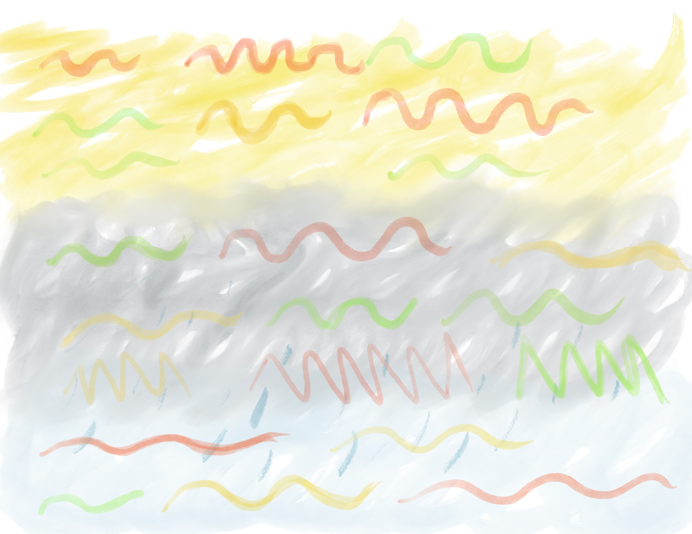
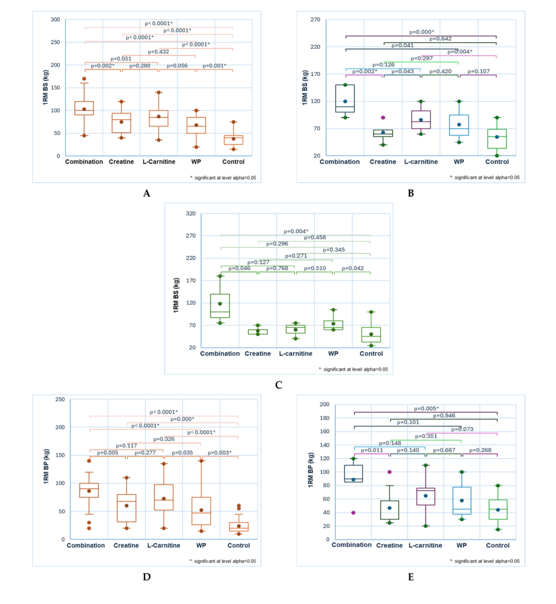

# Loading in required packages
library (tidyverse) # data wrangling and plotting
library(here) # direct file paths to call from
library(janitor) # to examine and read in data
library(readxl) # reads excel files
# create new object called salinity to call from our data file
salinity <- read.csv(here("data",
"salinity-pickleweed.csv"))
# my_data_commute as new object for my logged commute data
my_data_commute <- read.csv(here("data","updated_commute.csv")) |>
clean_names() # cleans column names to be used in ggplot
# my_data_skateboard as new object for my logged skateboard
my_data_skateboard <- read.csv(here("data","updated_skateboard.csv")) |>
clean_names() # cleans skateboard data columns to correct formatHomework-03
Problem 1. Slough soil salinity
a. An appropriate test
[The appropriate tests to determine the strength of the relationship between salinity and California pickle weed biomass would be the Pearson’s correlation and Spearman’s rank correlation. Pearson’s correlation differs because it is used when two continuous variables have a linear relationship and are normally distributed with the data meeting its assumptions of normality and independence. Spearman’s correlations is different because it is non-parametric and based on ranks that is more helpful in a monotonic relationship between variables instead of a linear relationship. ]
b. Create a visualization
# create a visualization for the relationship between salinity and pickleweed mass
ggplot(data = salinity, # calls for salinity data set
aes(x = salinity_mS_cm, # calls for assigning salinity column data to x-axis
y = pickleweed # calls for assigning pickle weed column data to y-axis
)) +
geom_point(color = "dodgerblue3", # plot data as points and change color
size = 3) + # change the size for each data point
labs(x = "Soil Salinity (mS/cm)", # call for labels and names x-axis with measurements
y = "Pickelweed biomass (g)", # label for y-axis with measurements
#label for title of the graph
title = "Relationship between Pickleweed biomass and Soil Salinity"
) +
theme_get() # changes theme different from the default 
c. Check your assumptions and run your test
Checking Assumptions
# Histogram of soil salinity distribution
ggplot(data =salinity, # calls for salinity data set
aes(x = salinity_mS_cm,)) + # assigns salinity data column to x-axis
geom_histogram(fill = "lightpink1", # calls for data as histogram using "fill()" to color them
color = "hotpink1", # colors the outline of the histogram boxes
bins = 8) + # groups data into bins of 8 data points
labs(x = "Soil Salinity (mS/cm)", # calls for labels and x-axis title
y = "Count", # y-axis title
title = "Soil Salinity Histogram Distribution") + # title of the graph
theme_classic()
# Histogram to check distribution of pickleweed data
ggplot(data = salinity, # calls for salinity data set
aes(x = pickleweed, # assigns data from pickleweed to x-axis
)) +
geom_histogram(fill = "darkgreen", # assigns data points into a histogram and colors them
color = "green4", # color for the histogram outline
bins = 8) + # assigns data into bins
labs(x = "Pickleweed biomass (g)", # label for x-axis
y = "Count", # label for y-axis graph
# label for the title of the histogram
title = "Pickleweed biomass Histogram Distribution ") +
theme_classic() # changes the theme to a classic look
[For this section I checked the assumptions of normal distribution and a linear relationship. I checked these assumptions by creating histograms and scatter plots to see if there was a linear relationship between salinity variables and if the data was normally distributed through a histogram. The scatter plot does shows that there could be a linear relationship between soil salinity and biomass, and the histogram shows that the distribution is normal by having an overall bell shape with no extreme variation making Person’s correlation the best test. ]
Running Test
# Pearson Correlation Test to evaluate strength of linear
# relationship of salinity and pickleweed biomass
# cor.test() calls for test for association between paired samples
cor.test(
# dataset$variable
salinity$salinity_mS_cm, salinity$pickleweed,
method = "pearson") # specifies to use Pearson correlation
Pearson's product-moment correlation
data: salinity$salinity_mS_cm and salinity$pickleweed
t = 2.8979, df = 21, p-value = 0.008605
alternative hypothesis: true correlation is not equal to 0
95 percent confidence interval:
0.1568265 0.7757682
sample estimates:
cor
0.5344778 d. Results communication
[To evaluate the strength of the relationship between pickleweed biomass and soil salinity, I used a Pearson correlation test. The test was used because both pickleweed biomass (g) and soil salinity (mS/cm) are continuous variables and can test the strength of the linear relationship of both uisng this test. The test showed a moderate relationship between soil salinity and biomass (Pearson’s r = 0.53, t(21) = 2.9, p =0.01, \(\alpha = 0.05\)). This data would suggest that pickleweed biomass would tend to increase as soil salinity increases suggesting that higher salinity could support more growth in pickleweed plants. ]
e. Test implications
[The results suggest that pickleweed biomass increases as soil salinity increases. For restoration planting, these results shows that pickleweed may grow more successfully in areas with higher salinity along the slough. To maximize planting success, the restoration site efforts should focus on prioritizing planting pickleweed in locations with higher salinity. ]
f. Double check your own work
# Spearmans Rank Correlation Test
# run a non-parametric correlation test measuring strenght of
# monotonic relationship of ranked data
cor.test( # "cor.test()" calls for test association between two variables
salinity$salinity_mS_cm, # "data set$variable"
salinity$pickleweed, # "data set$variable"
method = "spearman" # specifically calls for Spearman test to be ran.
)
Spearman's rank correlation rho
data: salinity$salinity_mS_cm and salinity$pickleweed
S = 824, p-value = 0.003426
alternative hypothesis: true rho is not equal to 0
sample estimates:
rho
0.5928854 [I ran a Spearmans Rank correlation test as non-paramtetric rank alternative compared to Pearsons correlation that evaluated the relationsip between pickleweed mass and soil salinity and showed a moderate relationship (Spearman \(\rho = 0.59\), S = 824, p = 0.01, \(\alpha = 0.05\)) which was similar to the Pearson correlation results (Pearson’s r = 0.53, t(21) = 2.9, p =0.01, \(\alpha = 0.05\)). Both tests would lead to the same decision to reject the null hypothesis and shows the relationship that as pickleweed biomass increases as soil salinity increases. ]
Problem 2. Personal Data
a. Updating your visualizations
# Visualizing Updated commute data visualization
my_data_commute_m <- my_data_commute |>
clean_names() |> # clean column names
mutate(day_of_week = str_trim(day_of_week),
day_of_week = factor(day_of_week,
levels = c("Monday","Tuesday","Wednesday","Thursday","Friday"))
)
ggplot(data = my_data_commute_m, # calls for commute data frame
aes(x = day_of_week, # assigns day of week column to x-axis
y = commute_time_minutes, # assigns commute time to y-axis
color = time_of_day)) + # changes color depending on time of day
geom_point(size = 3) + # changes size of data points
facet_wrap(~ time_of_day) + # add legend for specific column
# labels for title
labs(title = "Commute Time Across Days of the Week: Afternoon vs. Morning",
x = "Day of the Week", # labels x-axis
y = "Commute Time (minutes)", # labels y-axis
color = "Time of Day") + # assings legends based on colored points
theme_minimal() # changes theme 
# Visualizing updated skateboard data
my_data_skateboard_m <- my_data_skateboard |>
clean_names() |>
mutate(day_of_week = str_trim(day_of_week), # removes extra spaces from weekday names
day_of_week = factor(day_of_week, # changes day_of_week into an ordered factor
levels = c("Monday", "Tuesday", "Wednesday", "Thursday", "Friday")))
ggplot(data = my_data_skateboard_m,
aes(x = day_of_week, # assigns x-axis to weekday
y = skate_time_minutes, # assigns y-axis to skateboard time
color = day_of_week)) + # colors points and boxplots by weekday
geom_boxplot() +
geom_jitter(width = 0.15, # spreads points horizontally
height = 0, # keeps points at y value
alpha = 0.6, # makes points slightly transparent
size = 3) + # changes point size
scale_color_manual( # assign a unique color to each day value
values = c("Monday" = "green4", # assigning colors to values
"Tuesday" = "pink3",
"Wednesday" = "purple4",
"Thursday" = "blue2",
"Friday" = "goldenrod3")
) +
labs( # calls for labels on graph
title = "Skate Time Across Days of the Week", # adds plot title
x = "Day of the Week", # labels x-axis
y = "Skate Time (minutes)", # labels y-axis with units
color = "Day of the Week" # labels legend
) +
theme_classic() # uses a cleaner theme with less visual clutter
b. Captions
[Figure 1. Commute Plot: Shows commute time from Oxnard to UCSB across the days of the week separated by the time of day (morning vs. afternoon). Morning commutes ranged from 60-90 minutes while the afternoon commutes varied more with one longer commute. This figure highlights how commute times could vary depending on both the day of the week and morning or afternoon departure time.
Figure 2. Skateboard Plot: Shows skateboard commute time (minutes) across campus across weekdays. Each point is represented by an individual observation and each day has its own boxplot to represent the overall distribution of skate time between weekday. Skate time would vary greatly based on the day with a tighter cluster of points on friday and a larger spread of points on Monday. Wednesday being the most time skated of all weekdays.]
Problem 3. Affective visualization
a. Describe in words what an affective visualization could look like for your personal data
[An affective visualization that I would be interested in for my personal data would be to do a digital art work that I would create by hand based on the different variables I was able to record for my commute data. I wanted to blend a bit of the “Dear Data” website minimalist hand drawn art work by representing shapes as data points and colors as categorical variables trying to blend in as much as the variables I could organize neatly into my artwork.I also really liked the Environmental graphiti on how they blended a few different colors to hopefully make it more abstract as well. I hope to represent colors of what the weather conditions were like for the data points such as using a yellow-orange blend for sunny conditions and a gray color blend for cloudy conditions.]
b. Create a sketch (on paper) of your idea

c. Make a draft of your visualization.

d. Write an artist statement
[This drawing would visualize and emphasize how frequently I commute by representing commute time as waves in which the length reflect how long each commute took. The waves are colored differently depending on traffic levels, and weather conditions represented as color with the waves in that space showing how many times I drove in those conditions and to show what the day looked like. I was influenced by “Dear Data” project because it transformed personal daily data into a visual patterns. The visualization will be hand drawn digitally through Procreate possibly using a watercolor effect. My process involved experimenting with the variables I recorded to attempt to make them easier to visualize with color and detailed figures. Sharper zig-zag lines would represent the alternate or main road variables.]
Problem 4. Statistical critique
a. Revisit and summarize
[The authors for this study used many different types of statistical tests such as the ANOVA/MANOVA, Fisher’s F-test and the Krushkal-Wallis test to evaluate if different workout supplements and diet types had an effect on resistance training. The response variable measured in this study was the muscular strength in a one repetition maximum (kg). The predictor variable was the different supplement groups such as whey protein, creatine, L-cartinine, and a combination of all supplements, and a control group with no supplements. The figure included shows the results of the strenght gained and the different suppliment groups.]

b. Visual clarity
[The figures presented by the authors show clear figure visualization using box plots to separate into supplement groups and diet groups for each graph. The x-axis represent the supplement groups, and the y-axis represents the measured one repetition maximum for each data point with clearly labeled values such as (kg) and proper labels. The box plot included helped represent the data by being able to compare median distribution across different supplement groups and diet groups.The author also included p-values above the box plots to represent diffreneces for each group by the Krushkal-Wallis test. ]
c. Aesthetic clarity
[I think that the author did not handle the data to ink ratio that well. For group A and D they use the same color red on all their supplement groups so its hard to contrast between them. The same is true for part B and E using a mix of colors that doesn’t seem that visually appealing. I also think there could be too much clutter by including all the p-values for all the supplement groups and diet groups. I feel that a bit more color could have been used to make each group and subgroup contrast each other a bit more.]
d. Recommendations
[The recommendations that I would change to make the figure better would be taking out the p-value comparisons between groups above the box plots because I feel like it makes each figure seem more crowded and might make it harder to read with extra info that may not be necessary to visualize the results in a graph. I think they could include info statistical significance into a separate table displaying that info more easier to interpret. I would also recommend using less grid lines or none at all to make the graph seem lest cluttered with lines and make it look more clean. I also think including a legend would make the graph easier to read.]